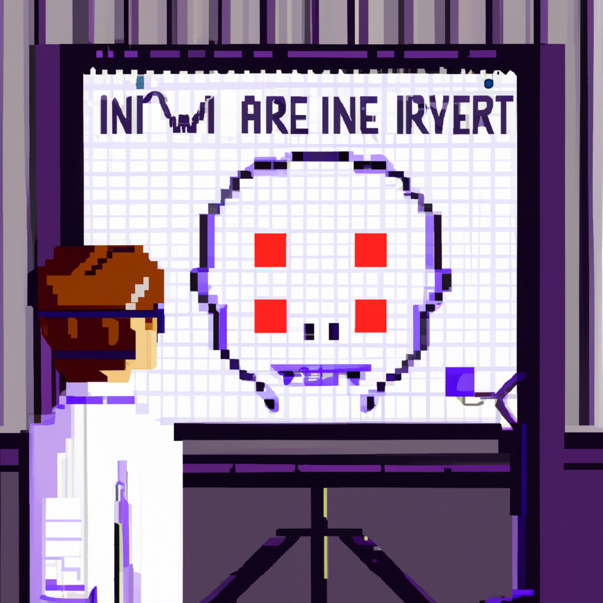

Why AI will never replace the radiologist
As a Python instructor and machine learning enthusiast, I am constantly amazed by the advancements and capabilities of artificial intelligence. From self-driving cars to virtual assistants, AI has made our lives easier in so many ways. However, there is one field where I strongly believe AI will never completely replace humans - radiology.
Radiology is the branch of medicine that uses medical imaging techniques such as X-rays, CT scans, and MRIs to diagnose and treat diseases. It requires a high level of expertise and accuracy, as any misdiagnosis can have serious consequences for the patient.
With the rise of machine learning and deep learning algorithms, there has been a lot of talk about how AI can revolutionize the field of radiology. Some argue that AI can analyze medical images faster and more accurately than humans, leading to quicker and more accurate diagnoses. While this may be true to some extent, there are several reasons why I believe AI will never fully replace radiologists.
Firstly, radiologists are not just image interpreters. They are trained medical professionals who have a deep understanding of anatomy, physiology, and pathology. This knowledge is crucial in making a correct diagnosis. AI, on the other hand, is limited to what it has been trained on and cannot take into account the patient's medical history or other factors that may affect the interpretation of the images.
Secondly, AI is only as good as the data it is trained on. While AI algorithms can be trained on large datasets, these datasets may not always be representative of the diverse population of patients that radiologists encounter. This can lead to biased results and incorrect diagnoses.
Another important factor to consider is the cost. Implementing AI technology in hospitals and clinics is expensive and not all healthcare facilities may have the resources to do so. This would lead to a divide in healthcare, where only those who can afford AI-based radiology services will have access to them, while others may have to rely on human radiologists.
Lastly, and perhaps most importantly, is the human element. Radiologists not only interpret images but also communicate with patients, provide emotional support, and make treatment recommendations. These are tasks that require empathy and a human touch, which AI simply cannot replicate.
In conclusion, while AI can certainly assist radiologists and improve efficiency, it will never fully replace them. Radiologists have a unique set of skills and knowledge that cannot be replaced by machines. As we continue to develop and improve AI technology, it is important to remember the vital role that radiologists play in the healthcare system.